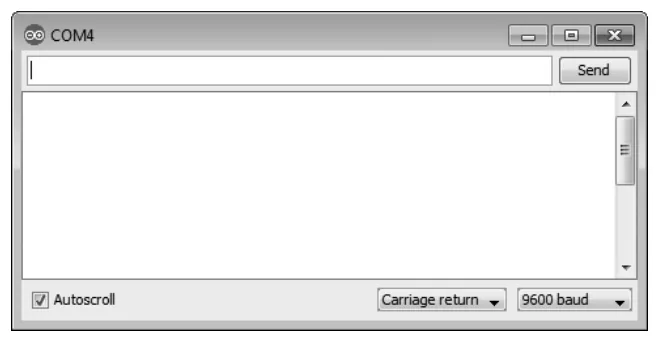

So far, we have sent sketches to the Arduino and used the LEDs to show us output (such as temperature and traffic signals). Blinking LEDs make it easy to get feedback from the Arduino, but blinking lights can tell us only so much. In this section you’ll learn how to use the Arduino’s cable connection and the IDE’s Serial Monitor window to display data from the Arduino and send data to the Arduino from the computer keyboard.
The Serial Monitor
To open the Serial Monitor, start the IDE and click the Serial Monitor icon button on the tool bar, shown in Figure 5-2. The Serial Monitor should open and look similar to Figure 5-3.

As you can see in Figure 5-3, the Serial Monitor displays an input field at the top, consisting of a single row and a Send button, and an output window below it, where data from the Arduino is displayed. When the Autoscroll box is checked, the most recent output is displayed, and once the screen is full, older data rolls off the screen as newer output is received. If you uncheck Autoscroll, you can manually examine the data using a vertical scroll bar.
Starting the Serial Monitor
Before we can use the Serial Monitor, we need to activate it by adding this function to our sketch in void setup():
Serial.begin(9600);The value 9600 is the speed at which the data will travel between the computer and the Arduino, also known as baud. This value must match the speed setting at the bottom right of the Serial Monitor, as shown in Figure 5-3.
Sending Text to the Serial Monitor
To send text to the Serial Monitor to be displayed in the output window, you can use Serial.print:
Serial.print("Arduino for Everyone!");This sends the text between the quotation marks to the Serial Monitor’s output window.
You can also use Serial.println to display text and then force any following text to start on the next line:
Serial.println("Arduino for Everyone!");Displaying the Contents of Variables
You can also display the contents of variables on the Serial Monitor. For example, this would display the contents of the variable results:
Serial.println(results);If the variable is a float, the display will default to two decimal places. You can specify the number of decimal places used as a number between 0 and 6 by entering a second parameter after the variable name. For example, to display the float variable results to four decimal places, you would enter the following:
Serial.print(results,4);